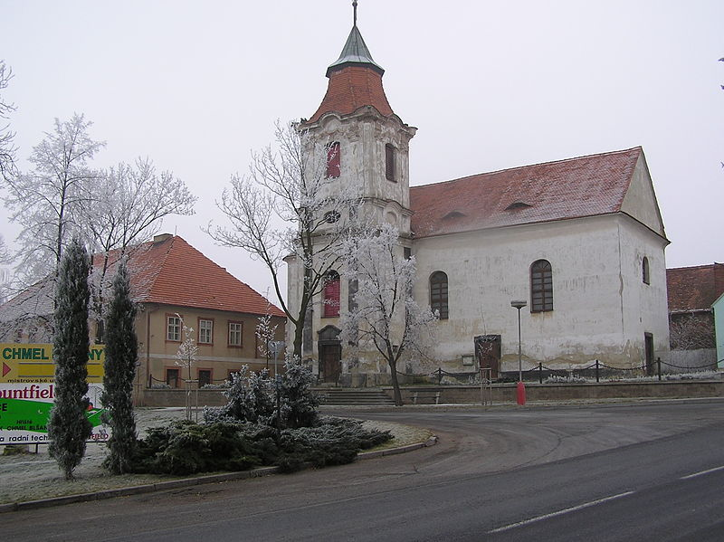

Fara
Východně od kostela stojí jednopatrová barokní budova fary, postavená r. 1734. V l. 1954–1960 v ní sídlil podbořanský okresní archiv.
Plastika sv. Jana Nepomuckého
Na návsi před farou stojí barokní plastika sv. Jana Nepomuckého se dvěma anděly po stranách z r. 1735.
